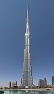

Burdż Chalifa(arab. برج خليفة, Burǧ Ḫalīfa, Burj Khalifa, po polsku także: Wieża Chalify, przed otwarciem: Burdż Dubajj, arab., Burǧ Dubayy, Burj Dubai, pol. Wieża Dubaju) – wieżowiec w Dubaju, w Zjednoczonych Emiratach Arabskich, zbudowany przez przedsiębiorstwa Samsung Constructions, BESIX i Arabtec, o wysokości 828 metrów. Najwyższy budynek świata, który pobił rekord wysokości dla budowli dzierżony wcześniej przez polski Maszt radiowy w Konstantynowie (646m). Jego nazwa pochodzi od imienia szejka Chalify ibn Zajida Al Nahajjana, byłego prezydenta Zjednoczonych Emiratów Arabskich.
Budowa, rozpoczęta 21 września 2004, zakończyła się 16 sierpnia 2009. Wysokość 827,9 metrów została osiągnięta 17 stycznia 2009, a oficjalne otwarcie nastąpiło 4 stycznia 2010. Budynek ma 163 piętra użytkowe. Koszt jego budowy wyniósł 1,5 miliarda dolarów.
Wieżowiec Burdż Chalifa zaprojektowany został przez przedsiębiorstwo architektoniczne Skidmore, Owings and Merrill, które projektowało także budynki Willis Tower oraz 1 World Trade Center. Ogólny jego wygląd nawiązuje do kwiatu pustyni z rodzaju Hymenocallis oraz architektury islamu (różne ornamenty). Budowla składa się z centralnego rdzenia oraz trzech „ramion”, które w miarę zwiększania się wysokości są coraz mniejsze, co nadaje jej smukłość. Na samym szczycie centralny rdzeń przechodzi w iglicę. Najniższe piętra przeznaczono na hotel, którego wystrojem zajął się Giorgio Armani.
Marina 101, także Dream Dubai Marina – wieżowiec w Dubaju w Zjednoczonych Emiratach Arabskich. Budynek ma 425 m wysokości i 101 pięter.
Pierwsze 33 piętra wieżowca zajmuje pięciogwiazdkowy hotel Hard Rock z 281 pokojami, a piętra od 34 do 100 apartamenty mieszkalne.
Poza pięcioma restauracjami, w wieży hotelowej, znajdują się także 252 apartamenty jednopokojowe, 204 dwupokojowe i 42 trzypokojowe z 6 podwójnymi penthausami od 97. do 100. piętra.
Na 101 piętrze wieżowca znajduje się salon klubowy, restauracja i sklep Rock Shop.
Elite Residence – wieżowiec w Dubaju, w Zjednoczonych Emiratach Arabskich. Budynek został zaprojektowany w stylu postmodernistycznym. Wieża stała się czwartym najwyższym wieżowcem
w Dubaju oraz trzecim co do wielkości budynkiem mieszkalnym na świecie.
Budynek ma 380 m wysokości oraz 91 pięter. 76 pięter jest przeznaczonych na użytek mieszkalny,
pozostałe 15 pięter to udogodnienia dla gości, m.in. baseny, spa, sale biznesowe, kluby zdrowia, centrum biznesowe, sale gimnastyczne, recepcje.
Budowa wieżowca rozpoczęła się w 2007 roku. Otwarcie wieżowca nastąpiło w 2012.
 Marina 101, także Dream Dubai Marina – wieżowiec w Dubaju w Zjednoczonych Emiratach Arabskich. Budynek ma 425 m wysokości i 101 pięter.
Marina 101, także Dream Dubai Marina – wieżowiec w Dubaju w Zjednoczonych Emiratach Arabskich. Budynek ma 425 m wysokości i 101 pięter.